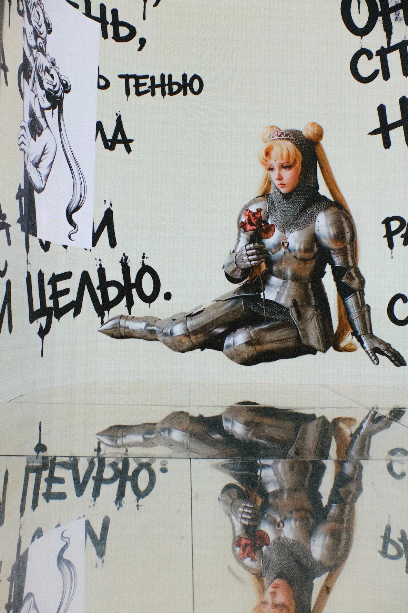
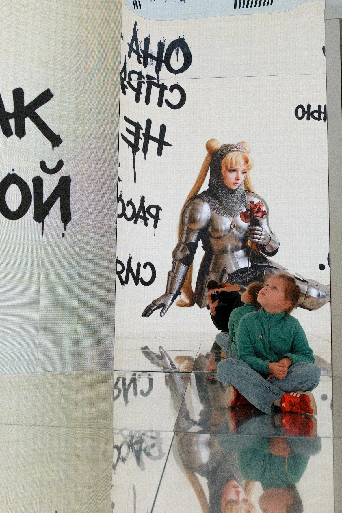

一河两岸 · «У реки два берега»
苏兹达尔 · MIRA，Collider多媒体空间 · 2026
作品《显而易见／不易察觉》作者；负责整场展览视频节目的剪辑，并与策展人紧密合作。以Berezovy Prompt艺术小组成员身份参加。
《一河两岸》是MIRA与Berezovy Prompt艺术小组在苏兹达尔Collider多媒体空间的合作项目。展览于2026年3月21日开幕，探索感知的双重性：人与技术、熟悉与新奇、内部与外部。
白厅展出Ilay Dzhipov的装置Backrooms：一间空无一人却依旧运转的办公室。数字展厅则通过艺术家的视频作品呈现不同的对立关系。
我在展览中的工作
除创作自己的作品外，我与策展人紧密合作，并将艺术小组所有参与者的作品剪辑成完整的展览视频节目。
显而易见／不易察觉
我的作品围绕“显而易见／不易察觉”这一组关系展开，构成集体视频作品的一部分。每位艺术家都通过自己的主题与视觉语言来探讨双重性。
视频节目的音乐由Dmitry Nevolnik创作。
《显而易见／不易察觉》视频
展览现场照片

